Scribbles · UI Exploration
UI replication, layout systems, and visual hierarchy study through recreating a complex interface.
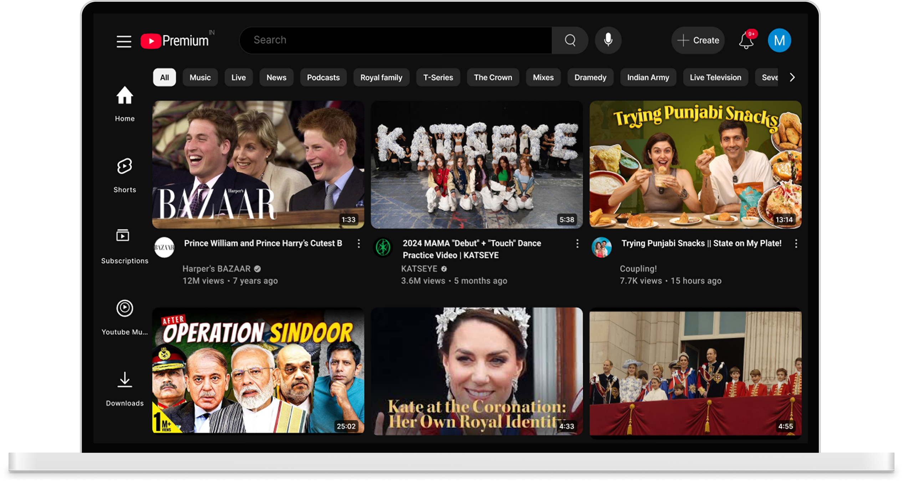
These YouTube screens were recreated as a focused design exercise to understand how large-scale products structure their interfaces — studying grid systems, layout logic, and component behavior.
Original Interface
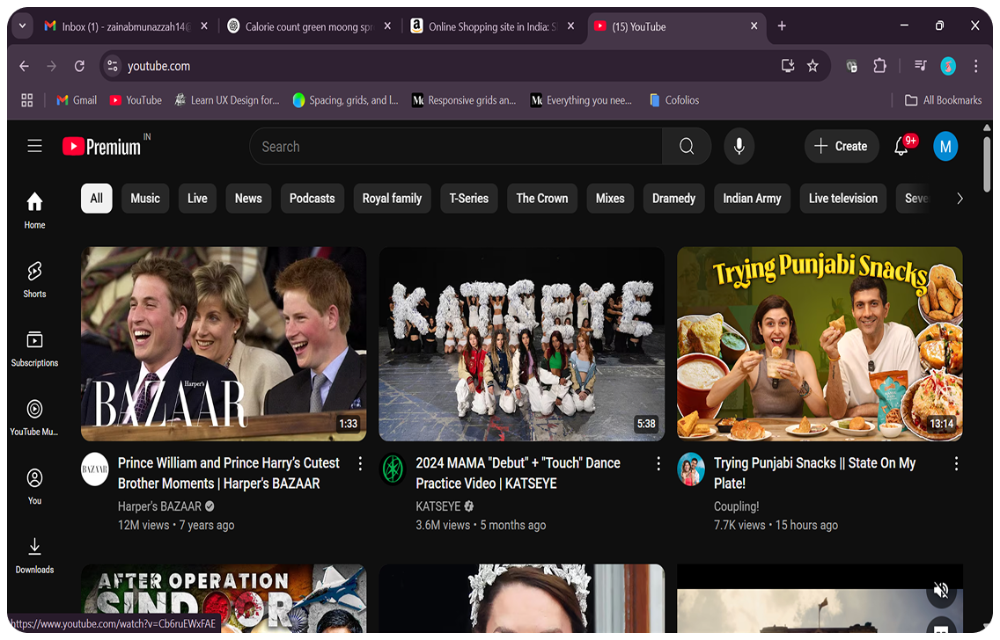
Recreated in Figma
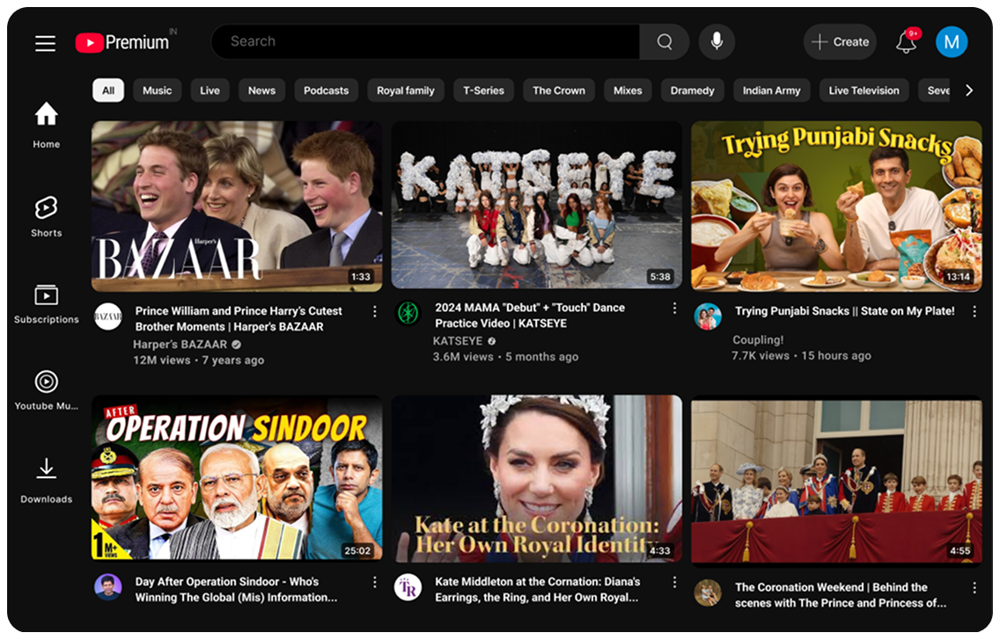
Key screens were recreated to study layout behavior, spacing systems, and visual hierarchy across different states.
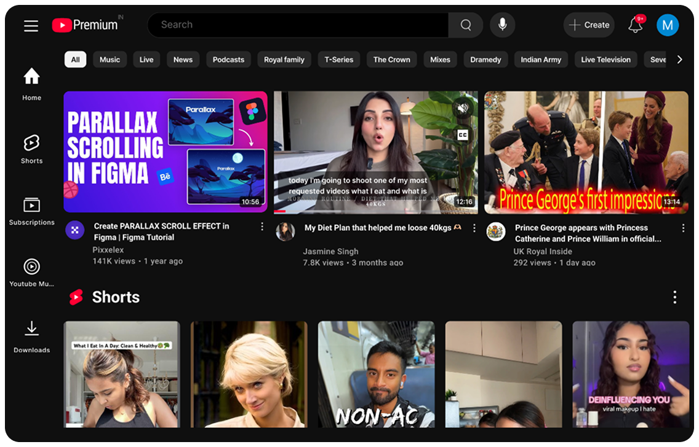
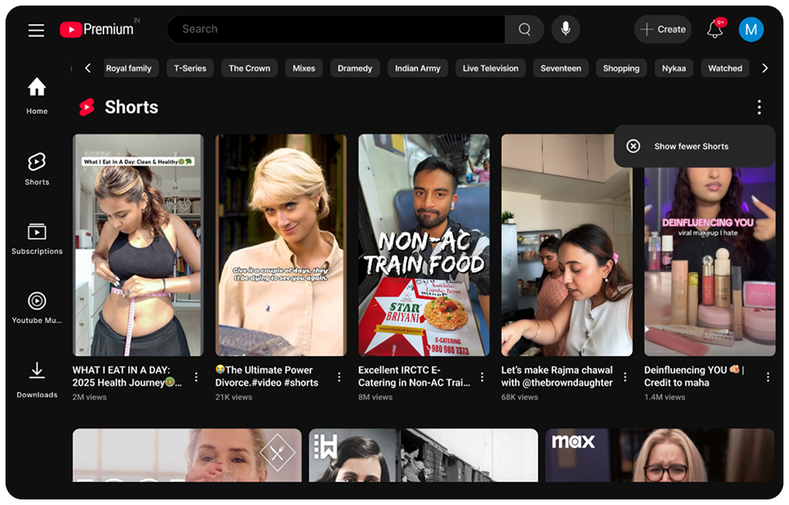
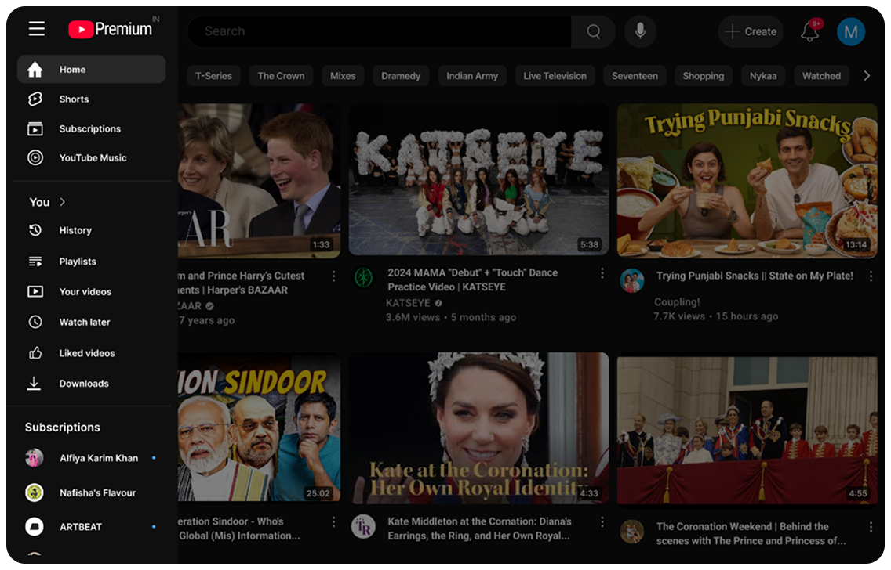
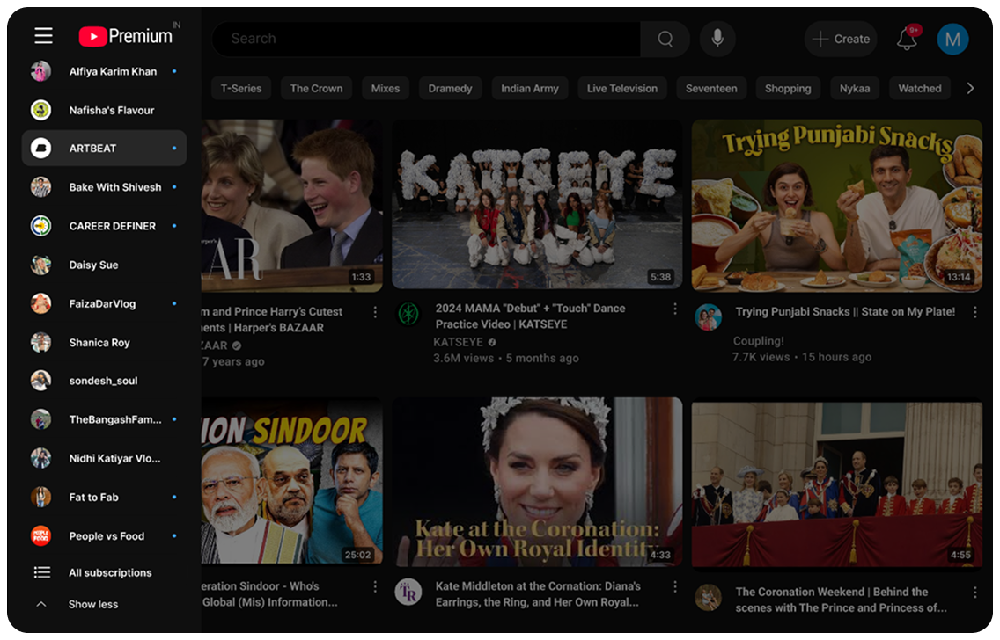
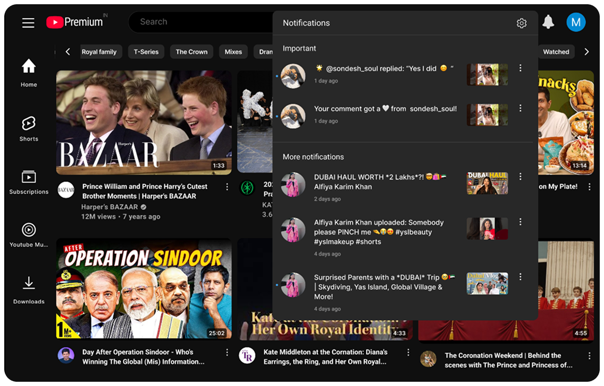
The interface was deconstructed into reusable components to understand structure, scalability, and consistency across the system.
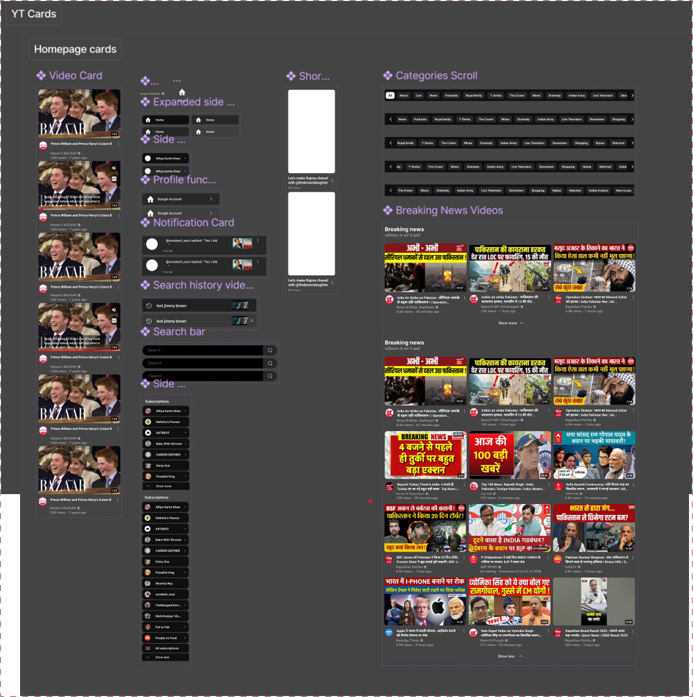
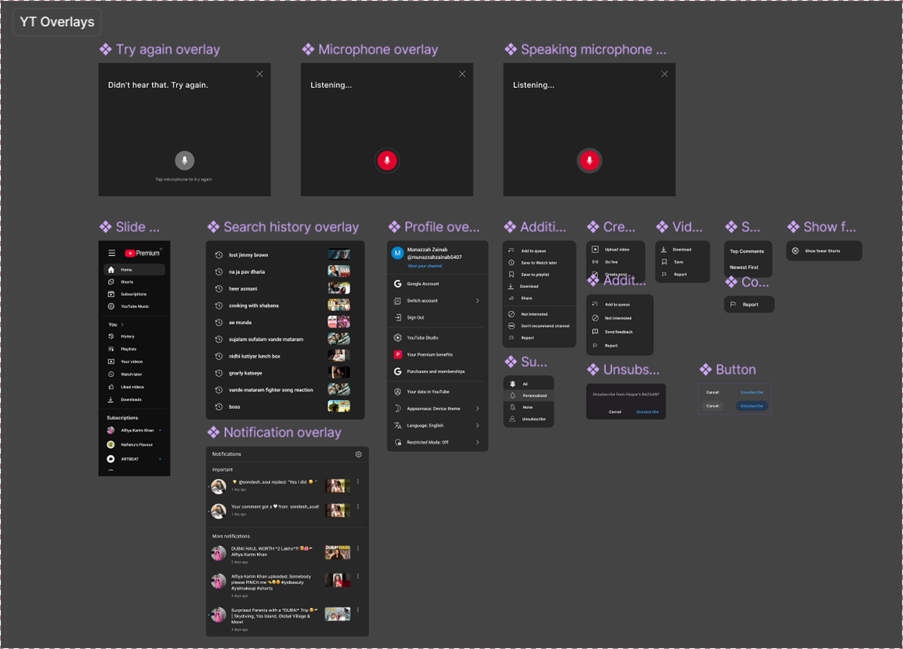
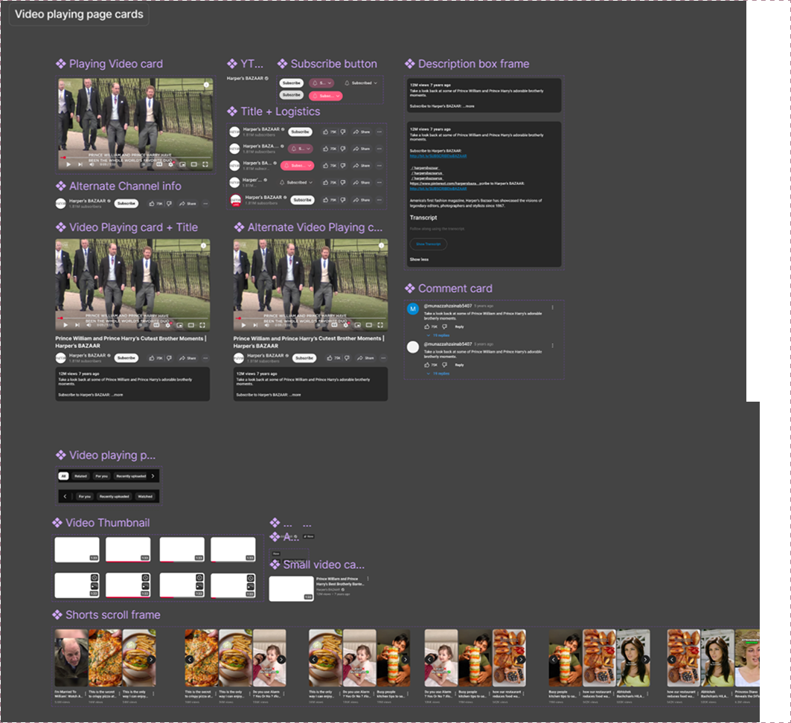
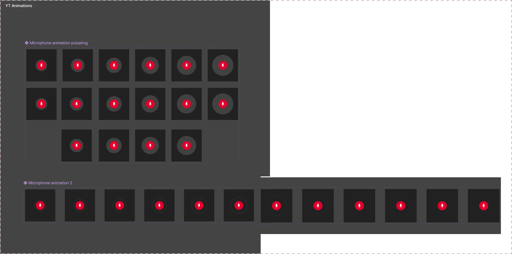
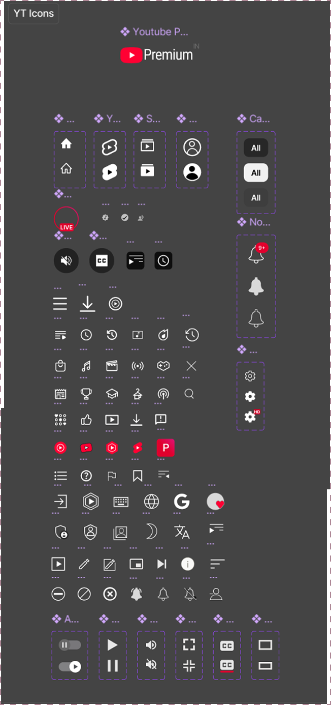
Motion and micro-interactions were analyzed to understand how feedback, transitions, and states enhance usability.
Voice search interaction
Hover & feedback behavior
Disclaimer - This is a self-initiated UI exploration project. YouTube is a trademark of Google and this work is not affiliated with or endorsed by YouTube.